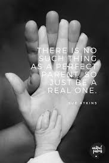

Being a parent comes with a lot of responsibility and difficult decision making. You always have your child's best interest at heart, but sometimes your child may disagree with the rules you have set down. That is why, I believe, the perfect parenting style is democratic. You can compromise with your child, but still have basic rules you want them to follow, without them feeling targeted or that you are being unfair. When i become a parent, I want to make sure my children have guidelines. I want them to be able to make their own mistakes and learn from them. Their health, their type of entertainment and the toys they play with are three major, broad categories that I would like to have a say in, along with their input of course.
That always worked on me, so hopefully they will pick up that trait. Another example of the democratic parenting style is when your teenager wants to get a piercing or a tattoo. This subject is surprisingly easy for me to make rules upon. I would never tell my child not to get a piercing, but I also would not give them consent. I know what it is like to have a mom who says no most of the time to everything. With my children, I do not want to have to say no because that will make them want to do it even more. As long as I found the piercing or tattoo to be age appropriate and small, I would not mind making an adjustment to their wishes as long as they made adjustments to mine. Secondly, what my children enjoy doing in their spare time is not only a personal chioce, but an important aspect in anyones life. I would never tell my daughter she could not play hockey, or my son that he could not dance. Even though I would not be a huge fan of my son dancing, it is his own decision and not mine to make. Although I would control how much they play and where and when they play and everything that goes along with sports or clubs. Television shows and movies are another thing that I have difficulty deciding where the line is for a certain age. Do I let my eight year old child watch 'Nightmare on Elm Street'? No, I definitely do not. But I can give them the choice of watching Pokemon or Harry Potter. It is especially difficult once
What makes a good parent? People have always tired to find out the answer, because what makes a good parent makes a good family and what makes a good family makes a good society and finally what makes a good society makes the world we live in a good one. Actually it is family where all the social ills come from. It is family that predetermines what kind of society we will have tomorrow, because the society of tomorrow will be born to and moulded in the family of today. So if we want to find out what makes a good parent and try to change the society we'll be living in we've got to start right now. So let's start.
What makes a good parent? Many people think that it is impossible to answer this question, because what…show more content…
But as soon as children start feeling that their parents care too much, they try to get back at them and do just what their parents don't want them to do. On the other hand kids who face lack of freedom may end up turning into introverts afraid to speak to other people or not as social (which is not a bad thing though).
I believe that next thing any parent must not forget about is trust. Being consistent with your child is of paramount importance because that's how trust is supported. Being consistent is not changing the rules half way through the game. Being consistent is not promising rewards that kids will never see. Being consistent is not threatening punishment without carrying it through. From the very first day on Earth children put trust in their parents and it must not be betrayed because once it is, once children find out they have been lied to, you will have to literally put yourself out to win it back.
Communication. Being able to communicate well builds confidence and charisma. Parents should not be afraid to talk to their children. They should not jump down through their throat when they are curious about something either no matter how stupid it may seem. Parents should be able to look at everyday things and events through the eyes of their children who are new in this world and have little knowledge of it. Everyday experiences can give children a wonderful chance to explore and learn and it must not be taken from them by their.
What is a good Parent? A good parent can fall into many many categories of life as a parent. Giving birth is a start of being a excellent parent .A parent is someone who cuddles their children when things are not going right in their lives, because parents everywhere can say that if we as parents trust ourselves enough to trust our children it will make parenthood easier. Being a good parent starts with having both the mother and father because it takes two loving parents to have a child, so it takes two parents to raise a child .Parents should love their children unconditionally, understanding your child needs and wants can be very helpful in being a good parent as well. A two parent household that involves every day activities such as helping with their homework, doing chores around the house, family night out, and a walk in the park as a family this type of involvement in a child’s life is the key to becoming great parents.
Raising a child is a very important task because it’s not always easy it’s even harder if we don’t have the consistent help especially if you’re a single parent. The help of both parents raising a child(ren) together makes the job a much easier task, a child(ren) feels more safer with both parents love it gives them the structure and stability that they need and want they actually function better when they have a place they call home. Children always think that we as parents are always being mean but that’s not true we just want what’s best for them we e should always try to give them that unconditionally love and support in what they do in life as long as it’s the right decision. A Part of being a good parent we should love them unconditionally regardless of what they do and how many mistakes they make in their life that’s all A part of learning and recognizing things that are good and bad . Our kids will say and do things that will hurt and break our hearts they can also do many things to us as parents
“What it's like to be a parent: It's one of the hardest things you'll ever do but in exchange it teaches you the meaning of unconditional love.”

Leave a comment